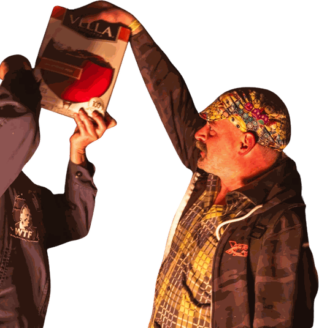

The only substance we test for is box wine (it's mandatory)
Five liters. Shelf-stable. Built-in tap. No bottle to break, no cork to lose, and it doubles as a pillow once it's empty. Tell us one piece of carbon that does all that.

Real quotes from real people
(We checked. Management fact-checks. Management does not fact-check anything else.)
"Life is like riding a bicycle. To keep your balance you must keep moving."
"Let me tell you what I think of bicycling. I think it has done more to emancipate women than anything else in the world."
"Get a bicycle. You will not regret it, if you live."
"It never gets easier, you just go faster."
"Ride as much or as little, or as long or as short as you feel. But ride."
"Shut up legs!"
The pros, on doping
Fausto Coppi, in a TV interview:
Q: Did you take la bomba?
Coppi: "Yes. Whenever it was necessary."
Q: And when was it necessary?
Coppi: "Almost all the time!"
"Leave me in peace; everybody takes dope."
"Doping? What doping? Did he or did he not make them play the Marseillaise abroad?"
The Lance Armstrong Memorial Asterisk
"Everybody wants to know what I'm on. What am I on? I'm on my bike, busting my ass six hours a day. What are you on?"
"If Armstrong's clean, it's the greatest comeback. And if he's not, then it's the greatest fraud."
The scoreboard: seven straight Tour de France wins, 1999–2005. All seven were stripped in 2012, and nobody else got them. In January 2013 he sat down with Oprah and, asked if he'd used banned substances, finally said "Yes."
So from 1999 to 2005 the Tour de France officially has no winner. Management would like to announce that it will fill that vacancy. We have a singlespeed and no plans.
Asterisk*
*Results from 1999–2005 not valid. See Oprah.
The Wall of Excuses
Actual explanations offered for failed tests and awkward discoveries, rated for believability.
| Excuse | Believable? |
|---|---|
| Contaminated steak (Alberto Contador, 2010, after testing positive for clenbuterol) | |
| They were for my mother-in-law (the wife of rider Raimondas Rumšas, caught with drugs in her car during the 2002 Tour. She was jailed for several months anyway.) | |
| My chain skipped into a secret gear (you, at SSAZ) |
SSAZ anti-doping policy
Banned substances: gears, e-bike batteries, rider-specific hydration mixes, anything you bought on the advice of a podcast.
Permitted substances: box wine, warm beer, gas-station burritos, electrolytes (if the electrolytes are beer), campfire smoke.
Testing: Karl will yell "RACE DAY!" at you. If you cry, you're clean.
Penalty: lifetime ban, served by walking home.
Lore & mythology
- Repack, 1976
- October 21, 1976, near Fairfax, California: hippies ran old Schwinn "clunkers" down a fire road. The coaster brakes cooked so hard the hubs had to be repacked with grease after every run, hence the name. Mountain biking was invented by guys riding singlespeeds too fast. You're welcome.
- The 1904 Tour
- Only the second Tour de France ever, and riders were accused of taking trains. Twelve cyclists were disqualified, including the top four finishers. The cheating is older than the jersey.
- Bicycle Day
- April 19, 1943: chemist Albert Hofmann took the first intentional dose of LSD in Basel, then rode his bike home. People still celebrate it. It is the single most important bike commute in history.
One-liners (Management's own, sorry)
- My singlespeed has one gear, and it's "wrong."
- We don't say "hike-a-bike." We say "scenic appreciation interval."
- A singlespeeder walks into a bar. The bar was uphill.
- Q: How do you know someone rides a singlespeed? A: Don't worry, they'll tell you. Then they'll tell you again at the campfire.
- Pick your gear ratio the night before, sober. Regret it the next morning, hungover.
- There are two kinds of singlespeeders: those who've walked a climb, and liars.
- "Spin to win" is not a strategy. It's a cry for help.
- We tried to set up a derailleur once. We still can't talk about it.
Famous quotes nobody can prove they said
"When I see an adult on a bicycle, I do not despair for the future of the human race."
Management's position: if it's on a mug, it's true enough.
Silly links
Sheldon Brown on singlespeeds ↗ Sheldon Brown on fixed gears (for the really lost) ↗ The Velominati Rules (see Rule #5) ↗ Repack, the original clunker race ↗ The 1904 Tour: train-assisted racing ↗ Bicycle Day ↗ The Lance Armstrong doping case, in full ↗